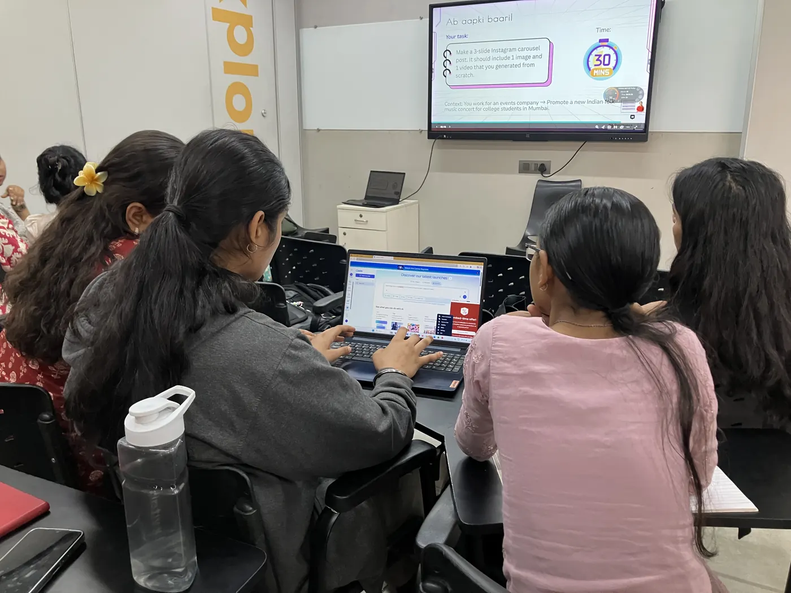

A practical learning journey where Naaris master how to co-create unique outputs with GenAI across 50+ professional use cases. From churning out powerful content and applying emotional intelligence to build deeper context, to training agentic AIs, our GenAI Ready Naaris can think, create and imagine for any new challenge at work!
- 40 hoursImmersive training
- GenAI + Human Skills16+ skills, from prompting to emotional intelligence
- Industry projectsWith mentoring and placement training